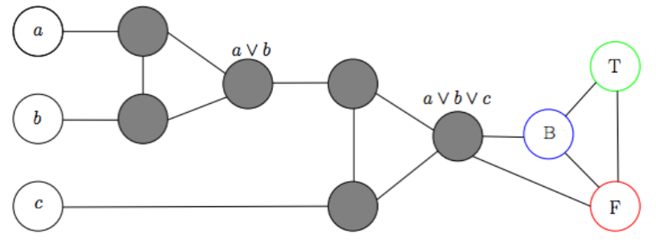
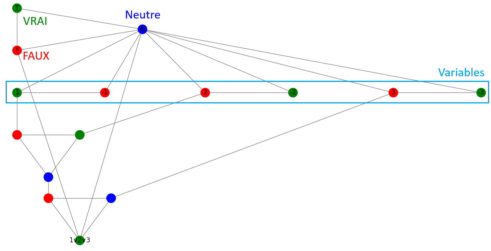
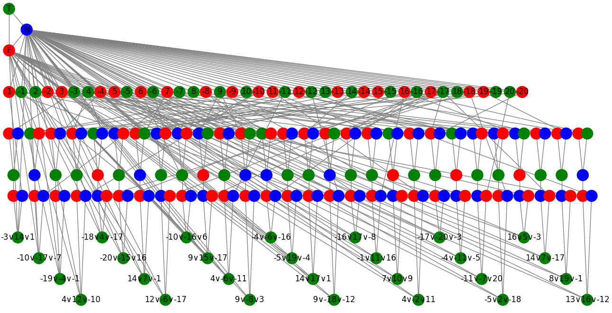
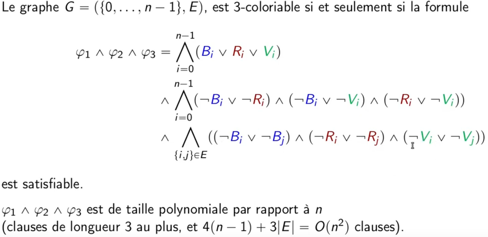
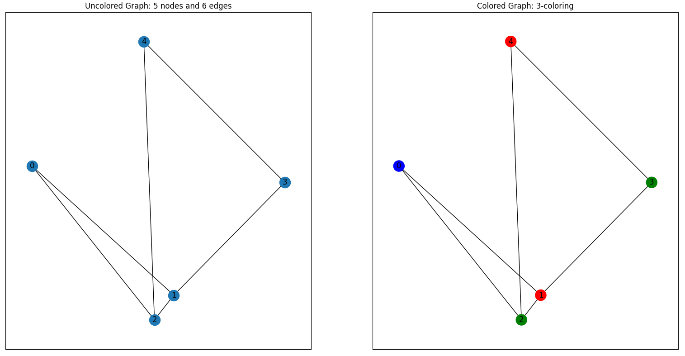

Projet
L'objectif premier de ce projet est de montrer l'équivalence entre les problèmes de satisfiabilité en logique propositionnelle (SAT) et le problème de coloration de graphe. En d'autres mots, notre projet illustre la correspondance entre les complexités de ces deux problèmes NP-complets.
La première étape consiste à coder par un graphe l'opérateur logique OU et d'établir une correspondance entre couleurs et valeurs logiques.
Modèle
Exemple
On montre que 1 = Vrai, 2 = Faux et 3 = Faux est solution de (1 ∨ 2 ∨ 3)
A partir de ce composant de base on peut étudier des problèmes 3-SAT car il nous est possible de coder par un graphe toute formule sous forme normale conjonctive (CNF) dont les clauses sont de longueur 3, tel que si l'on trouve une 3-coloration propre du graphe, la formule est vraie. Une telle coloration peut être determinée de façon relativement efficace à l'aide d'un algorithme glouton type "DSATUR".
Exemple
Dans un second temps il nous est possible de prendre le problème à l'inverse et de résoudre un problème de coloration de graphe à l'aide d'une formule CNF.
Méthode de transformation
- Bi: le sommet i est bleu
- Ri: le sommet i est rouge
- Vi: le sommet i est vert
- φ1 : « Chaque nœud a au moins une couleur »
- φ2 : « Chaque nœud a au plus une couleur »
- φ3 : « Deux nœuds voisins n'ont pas la même couleur »
Exemple
(V0 ∨ R0 ∨ B0) ∧ (-V0 ∨ -R0) ∧ (-V0 ∨ -B0) ∧ (-R0 ∨ -B0) ∧ (V1 ∨ R1 ∨ B1) ∧ (-V1 ∨ -R1) ∧ (-V1 ∨ -B1) ∧ (-R1 ∨ -B1) ∧ (V2 ∨ R2 ∨ B2) ∧ (-V2 ∨ -R2) ∧ (-V2 ∨ -B2) ∧ (-R2 ∨ -B2) ∧ (V3 ∨ R3 ∨ B3) ∧ (-V3 ∨ -R3) ∧ (-V3 ∨ -B3) ∧ (-R3 ∨ -B3) ∧ (V4 ∨ R4 ∨ B4) ∧ (-V4 ∨ -R4) ∧ (-V4 ∨ -B4) ∧ (-R4 ∨ -B4) ∧ (-V0 ∨ -V1) ∧ (-R0 ∨ -R1) ∧ (-B0 ∨ -B1) ∧ (-V0 ∨ -V2) ∧ (-R0 ∨ -R2) ∧ (-B0 ∨ -B2) ∧ (-V1 ∨ -V3) ∧ (-R1 ∨ -R3) ∧ (-B1 ∨ -B3) ∧ (-V1 ∨ -V2) ∧ (-R1 ∨ -R2) ∧ (-B1 ∨ -B2) ∧ (-V2 ∨ -V4) ∧ (-R2 ∨ -R4) ∧ (-B2 ∨ -B4) ∧ (-V3 ∨ -V4) ∧ (-R3 ∨ -R4) ∧ (-B3 ∨ -B4)
La dernière étape consiste à étudier les problèmes de satisfaction de contraintes (CSP) et de trouver une nouvelle approche pour les colorations de graphes. Il suffit de définir une liste de variables, chacune représentant un noeud, pouvant prendre trois valeurs et devant être différente de celles des noeuds voisins.
Programme
Notre programme est interactif et s'utilise en console. En effet, via une mise en forme rudimentaire on propose divers choix à l'utilisateur, le premier de ceux-ci oppose « obtenir le graphe correspondant à une formule CNF et tenter de le colorier » et « colorier un graphe sans algorithme glouton ».
Dans le cas où le premier est choisi, l'utilisateur choisi l'algorithme de coloration qu'il souhaite : « DSATUR » (algorithme glouton), « CNF » (cf. méthode de transformation) ou « CSP » (méthode par satisfaction de contraintes). Ensuite on affiche la liste des fichiers CNF et on demande de saisir celui voulu, s'enchaine alors la génération du graphe correspondant à la formule, l'application de la méthode de coloration et l'affichage du graphe colorié (si la formule est satisfaisable).
Dans l'autre cas, l'utilisateur choisi l'algorithme de coloration non-glouton qu'il souhaite : « CNF » (cf. méthode de transformation) ou « CSP » (méthode par satisfaction de contraintes). Ensuite on lui demande de saisir un nombre de nœuds et d'arêtes, s'enchaine alors la génération d'un graphe correspondant à ces caractéristiques, l'application de la méthode de coloration et l'affichage du graphe généré sans coloration et sa version coloriée (s'il est 3-coloriable).
Nous pouvons aussi préciser que lors de ces diverses exécutions on affiche leur temps approximatif d'exécution ainsi que le temps d'exécution total à la fin de celles-ci.
Positionnement scientifique du projet
Le domaine de la complexité algorithme a toujours suscité un engouement de la part des chercheurs, notamment pour essayer d'identifier les problèmes dont la complexité est élevée (intuitivement dont le temps de résolution va augmenter de manière exponentielle en fonction de la taille des données du problème). En particulier, une question ouverte reste de savoir si les problèmes considérés actuellement comme très difficiles pourraient être résolus par des algorithmes dont le temps de calcul croîtrait de manière seulement polynomiale. La résolution du challenge P=NP, encore ouvert, donne lieu à un prix d'un million de dollars. Ce sujet permet d'aborder, de manière ludique, ce domaine de la complexité.